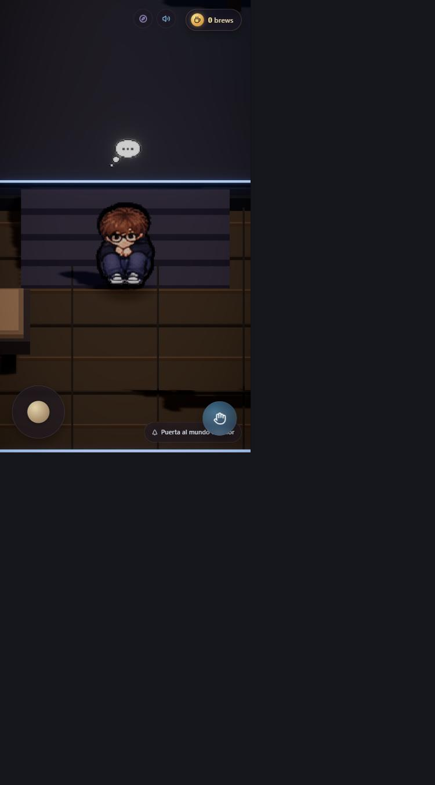
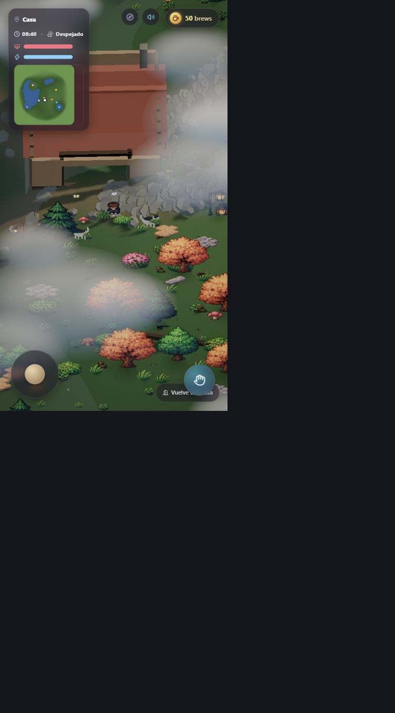
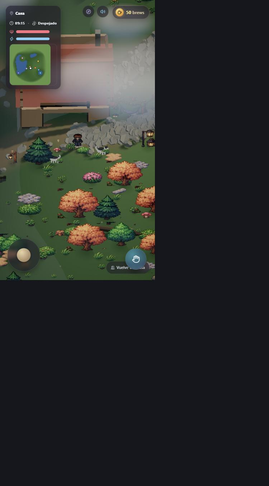
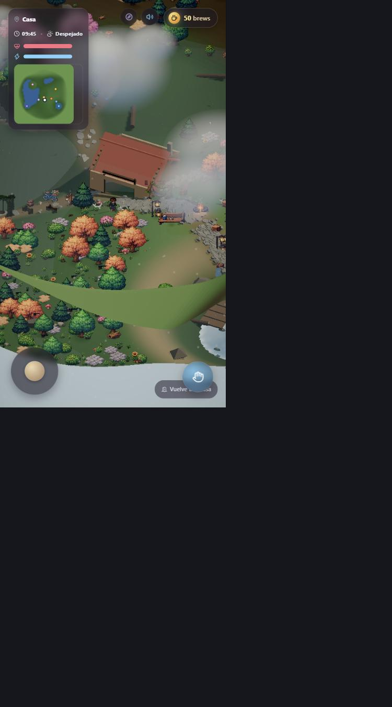

Mundo Interactivo 2.5D
En vez de leer sobre mis proyectos, entra y camina por ellos. Portrait es un pequeño mundo explorable en pixel art, renderizado en 3D con WebGL directo en el navegador — una forma distinta de presentar un portafolio.
Directo del mundo en vivo — sin mockups.




No es solo un visor 3D: tiene sus propios sistemas.
Camina con WASD, corre con Shift e interactúa con objetos del mundo usando E.
Rota la cámara con clic derecho y haz zoom con la rueda — el mundo es geometría real, no un sprite plano.
El reloj avanza mientras exploras, con barras de energía y ánimo que cambian según lo que hagas.
Un sistema de moneda propio ("brews") que se gana explorando el mundo.
En el muelle del lago se puede pescar. A veces pica, a veces no.
Sprites 2D en pixel art dentro de una escena 3D real, con niebla y luces dinámicas.
Portrait es un proyecto personal, no una app terminada — lo sigo ampliando por gusto, como campo de pruebas para WebGL y diseño de mundos. Si algo se ve inacabado, es porque lo está: esa es parte de la idea.
Entra al mundo directo desde tu navegador, sin instalar nada.
Entrar a Portrait